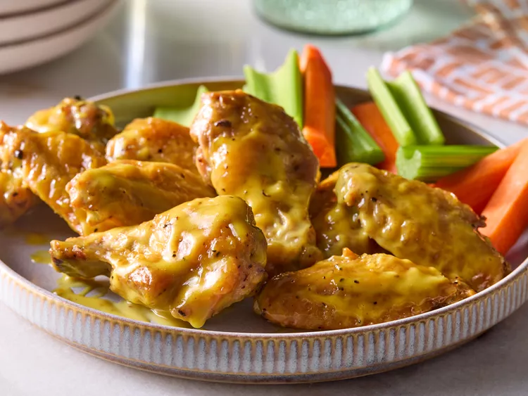

Honey Mustard Chicken Wings
These honey mustard chicken wings turn out super crispy and tender all at the same time.

Ingredients
- 1 1/2 teaspoons cornstarch
- 1 1/2 teaspoons cream of tartar
- 1 teaspoon garlic powder
- 3/4 teaspoon baking soda
- 1/2 teaspoon salt
- 1/2 teaspoon freshly ground black pepper
- 2 pounds chicken wing flats and drumettes (or whole wings separated into flats and drumettes, tips discarded)
- 2 tablespoons honey, or more if needed
- 2 teaspoons white wine vinegar
- 1/4 cup mayonnaise
- 2 tablespoons Dijon mustard
- 1 tablespoon yellow mustard
- freshly black pepper to taste
Steps
- Gather all ingredients.
- Whisk together cornstarch, cream of tartar, garlic powder, baking soda, salt, and pepper in a large bowl.
Add chicken wings to bowl and toss to coat.
- Line a 10x15-inch baking pan with foil. Set a wire cooling rack in pan.
Arrange wings evenly on rack.
Chill wings, uncovered, at least 4 hours or up to 24 hours before baking.
- Preheat the oven to 450 degrees F (230 degrees C).
Lightly coat wings with cooking spray.
Bake wings on wire rack in the pan, turning occasionally,
40 to 50 minutes or until golden brown and crispy and an instant-read thermometer inserted into thickest parts registers 165 degrees F (74 degrees C).
(Do not let thermometer probe touch bone).
- Meanwhile, in a small saucepan, combine honey and vinegar.
Heat over low until honey is liquefied, stirring often. Remove from heat and whisk in mayonnaise and both mustards.
Season to taste with coarse black pepper.
- Transfer sauce to a large bowl; add wings and toss to coat.
Return